这可能是我见过最好的编程指南
站狼国际 2018-10-15 14:36:59
云计算云在线互联网计算机键盘蓝色
从大一入学被调剂到计算机专业，到喜欢上这个专业，再到毕业拿到10多个offer，最终进入理想的大厂工作。回想起来这些年确确实实踩了很多坑。我刚开始学习编程的时候也想一口吃成一个胖子，想速成，但是有时候却是不尽人意。
回忆了下这几年学习编程的过程，整理了一些我自己认为很需要注意的几个方面，分享给大家。希望能让初学编程的你，少走一些弯路，可能文章比较长，但我真心希望初学编程的你能够认真看完，至少，我认为如果我刚学编程的时候看到这篇文章，对我或多或少是有一些帮助的。
我个人是一名计算机专业的学生，很多人可能会认为我是在课堂上学到的编程，其实不是这样。
我认为科班出身和非科班出身的学生最大的区别在于科班出身的学生知道去学什么，知道每一门课程是干什么的；还有一些必须完成的作业、小项目，促使他们去做一些实际的编码练习，除此之外，真的全靠自学。
对于自学编程，我认为首先应该谈的是如何去避免一些坑，这样就可能节约大把的时间。下面我就以问题的形式来分享一些我认为重要的方面。
1. 我应该选择什么编程语言
可能困扰编程新手最多的一个问题是【我应该学什么编程语言】或者【我需要学习哪些课程才能做出一个web、一个app】，很多人一直纠结这个问题，陷入了东学一点、西看一点的死循环，到头来啥也没学好，这会很浪费时间。
刚上大一的时候，我也很想知道应该选择什么编程语言。我问了很多人，网上各种查资料，但所能得到的答案都很片面，多数对这个问题答非所问，总是回答说“某某编程语言难”，“某某编程语言性能好”。其实作为初学者，我们对计算机体系都不了解，就不要过多地去纠结性能，或者难易等因素，原因我等下再说。
如果你有明确的方向，那么很好选择。如果你想做算法、机器学习方向，那么python是最好的选择。如果你想做web开发，java、php等都可以。如果想做一些更底层的工作，那么就可以选c。当然这是建立在你有明确方向的基础上。可是，很多人都没怎么接触过计算机行业，特别是和我一样刚入学就被调剂到计算机专业的人。对这些同学来说，各个编程语言就只是个名字，除了叫法不一样，你根本不知道它们有什么差别。所以索性不要纠结了，我替你选一个吧。
如果你是在校大学生，那么你有大把连续的时间，就先学习c，然后再学c++。我个人是学c入门的，也许很多人不理解我为什么推荐学c，因为c和c++都很难、很复杂，看起来并不适合入门。然而正是它们的难和复杂才能让你更好地理解计算机系统【计算机系统不是指操作系统】。学习编程不是学习编程语言，而是学习一个计算机生态，即一个庞大的知识体系。只会编程语言而不理解整个计算机的体系，就像只会写字而写不出好文章。了解c/c++和了解计算机系统是极为贴合的，向下可以帮助你更容易地理解操作系统、编译原理、计算机网络、计算机组成原理，为什么呢？因为较为底层的东西很多都是用c实现的，和系统的贴合度极高，很多教材源码甚至教程，在讲述这些知识的时候都是用c或c++作为媒介。而向上，c++面向对象的机制，也可以做出一些应用，譬如五子棋游戏等，也不会显得那么枯燥。花个小半年时间了解c和c++，之后你就会觉得看书、看资料可以轻松很多。
如果你是一个上班族，但是刚刚学习编程，可能学c和c++对你来说有些复杂和困难，因为学习它们确实是很需要时间。你们不像在校生那样有大把的连续时间，而零碎的时间去学习一个比较复杂的东西效果不见得有那么好，所以可以先学一些【更容易见效】的编程语言，从python入手吧，至少能快速做出一些小应用，不至于丢失了兴趣，但是真的要入门编程又还得看看与计算机系统相关的书籍，这样才能更深层次地去编程，譬如【深入理解计算机系统】这一本书可以读很多遍，这本书把整个计算机系统给串起来了。
2.学习编程，我需要学习哪些课程？
我要学哪些课程？我为什么要学习如高数、离散数学、线性代数、概率论等课程？
这个问题也是之前困扰了我很久的问题。不过我现在想通了，对于【高数、离散、线性代数、概率论】等课程，很好解释，做算法的同学肯定知道为啥要学习这些课程。机器学习中会大量用到上述提到的课程，所以会比较好理解。对在校生而言，学校开设的很多课程我们不知道为什么要学，我们很疑惑，不知道学它有什么用，这个时候我们就会很纠结，还会产生抵触情绪。这很正常，因为我们学习得不够深入，自然不能理解它们的用处。
在我看来，大学本科课程更多的是面向“面”的教学，即什么课程都教给你一些，但是又讲得不那么深入；而工作或者读研，更多的则是面向“点”的学习，用到的知识更专。本科时，学校也不知道你以后是去搞算法、还是搞架构、还是搞服务器开发，甚至去搞硬件，所以学校需要你学很多课程，至少有个了解。对学生来说，一方面可以从中选择自己感兴趣的点；一方面也可以对未来的就业方向有些启发。所以即使像数电、模电等课程，虽然之后可能用不着，但是你也要学，并且会花费大量的时间。虽然你最后不一定去搞硬件，但是这些课程也会让你更容易去理解一些知识，比如cpu中的逻辑器件。
如果你在大一的时候就有一个明确的定位，知道自己今后想从事哪方面的工作，课程与课程之间是可以调一下优先级的。不过像大学物理，这种课程确实是对编程没有帮助，但是像我前面所说的，大学教育更注重广度，大物等课程可能就是为了给你普及生活常识吧。
其实，大学教育的问题是普遍存在的，我认为我们学习一项技能的时候，应该采取的是项目驱动式学习，即需要用到什么东西时不会了再去学，而不是先填鸭式的都填进脑子，并且在学习的过程中我们还不知道它这是干嘛用的，等之后用到了，甚至不记得自己学过，反而查资料才会想起：哦，原来我之前学的xx科目是这个用处啊，可是我当时并没有好好学。很多时候学生时间的浪费可能还是要怪老师、怪学校，他们一开始没给我们做好充分的课程介绍。所以，在经过比较多的编程和项目实践后，我认为一个比较好的学习方式是，改良版的项目驱动学习法。即：
学习一段时间，做个小项目，将做项目遇到的问题记下来，针对性地学习相关知识，然后再实践，再学一段时间理论，让知识成网状发射状地变大。当然，项目驱动式学习有一个弊端，就是每次学习的知识都是项目所需要的，很零碎、不成体系，所以需要改良，即在采取项目驱动学习法的时候每天抽一段时间去完整地读一本书，或者一个相关问题的完整介绍，这样就很容易把一些知识成体系地串起来。这样一段时间下来，慢慢的，你就知道我们为什么要学那么多科目，学这些科目能干什么。
为了表达地更加形象，我就举一个小例子，是我最近遇到的。我本身的工作是做Linux C++的，但不仅限于此。我个人对python、数据分析，以及机器学习等内容比较感兴趣，大家可以看到我最近也在我的专栏发布了很多文章。就从数据获取开始，我讲讲我这两个月做了什么东西。
谈到数据获取，可能最容易想到的是爬虫，爬虫是一个在知乎上被说烂了的话题，所以我不想多说它是什么。很多时候有人觉得爬虫简单，为什么呢，因为有现成的框架，所以获取少量的数据就比较容易。但是当你需要爬取的数据很大的时候（比如我之前抓取了知乎500万用户的数据，在下班的时间、用自己家里普通的pc，计算机性能并不是那么好，比不上服务器，又要在不被封IP的情况下抓到这么大量的数据，然后对数据进行清洗，最后还要可视化展示），使用现成的爬虫框架就并不是那么容易实现了。况且，我需要抓很多数据源，并不是一锤子买卖。所以我选择去开发一个系统，即在现有的框架下进行二次开发，搭建一个属于自己的爬虫系统，并植入一些算法。我在系统中添加了很多中间件，直到现在，它还可以在10分钟内就部署一个能抓取大量数据的爬虫应用。当然，这个过程也遇到了不少麻烦，我就简单讲讲，怎么去攻克一个个问题。
下面先给出一个树形图，从上往下每一个圈都代表了学习过程中遇到的难点，如果你现在看不懂，没关系，我想告诉你的是一种梳理知识的方法：
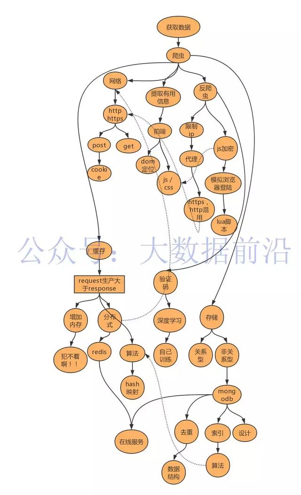
如上图所示，就是一个项目驱动式学习的例子，我们的目的是为了获取数据，所以选择了爬虫：
- 爬虫可以理解为一个简单的过程：发送request，获取response，然后提取数据。这个过程会涉及到网络，是发送http还是https请求；目标网站是否需要登录，是post请求还是get请求，从这条线，衍生出了一条对网络进行学习的路径。
- 获取到网页之后，如果不是结构化的数据，可能返回的是一个html源代码，那么可能就需要了解dom，或者html页面解析的知识，甚至需要了解一下前端开发。
- 在抓取的过程中，经常会遇到数据中途不能被爬取的情况，一般是IP被封禁了，那么可能又要用上代理，代理是什么呢？http，https代理能不能混用呢？如何构建一个代理池呢？这里又有很多要学习的东西。还有可能遇到的情况是，抓下来的数据是加密的，需要通过js解密，这时候就要了解一下js，如何用爬虫模拟浏览器进行抓取。除此之外，如果抓取的频率不对，很多数据源会给你假数据，这就是一些经验问题了，本文不是技术文，所以就不多讨论。
- 当解决了上述问题后，我们好像可以拿到一些数据了，但是当数据大起来，问题又复杂了，你可能需要使用分布式抓取了，这时候你可能需要了解一下redis，当request产生的速度大于其消费的速度之后，你的任务队列可能爆炸，所以这里又涉及到算法和数据结构的应用了。
- 数据量上去之后，把数据写在文件里面是不靠谱的，这时候又涉及到存储了，到底是使用关系型数据库还是非关系型数据库呢，有什么区别呢？存进去的数据怎么去重呢？为什么insert操作越来越卡了呢？电脑怎么越来越热了呢？索引是什么，什么时候该建立索引呢？这里又牵扯到数据库原理相关的知识。
- 遇到一些比较难处理的网站，比如有验证码识别该怎么办呢？其实对于很多纯数字和字母的验证码都很好解决，自己用深度学习训练即可。在TensorFlow的Demo中就要生成验证码自己训练的教程，然后制定个中间件放在爬虫系统中，这个问题就解决了。可是什么是深度学习呢？这里又引出一条对深度学习进行探索的例子，而我自己也是之前在学校的时候自学了小半年机器学习，有了一定的基础后，才能比较容易地上手TensorFlow框架。再往下就比较深了。
上述六点简单讲了讲项目驱动式学习的介绍，其实，你看到的每一个小圆圈，深挖下去都大有文章。我们现在看到的只是冰山一角，任何一条学习路径学习下去都深无止境，我们不可能完全学会，可是项目驱动式学习最大的好处是让你知道你应该去学习什么，而不是先学一大堆知识，再去做一个项目。严格来说，项目驱动式学习的可视化路径是一张网，而不是一棵树，这里画成树状只是为了便于大家理解。
除了获得数据，还有清洗数据、分析数据，甚至挖掘数据，最后可视化数据并且展示数据，这里我就不一一介绍了。可以参见下面这张图，如果大家想看我做的一些成品，可以看看我的其他文章。
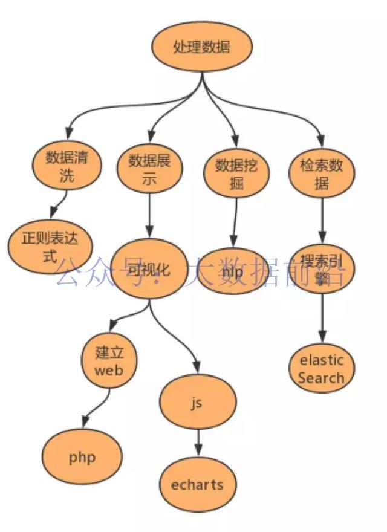
3.学习编程是否需要制定计划？
学习编程是否需要制定计划，该制定什么样的计划呢?
我认为不只是编程需要制定计划，其他任何的学习和工作都需要制定计划。我从13年上大学就开始定期给自己制定计划，这个习惯也一直坚持到了现在，受益匪浅。当然也不只是制定学习计划，还可以列一些自己需要做的其他的事情。我最近在整理笔记的时候也发现了一些之前记录的计划和清单，可以给大家看看。比如下图就是我14年写的笔记，笔记上都留下了最后一次打开的时间。列举了一些自己需要看的文章，因为当时不太懂得规划，所以比较乱。
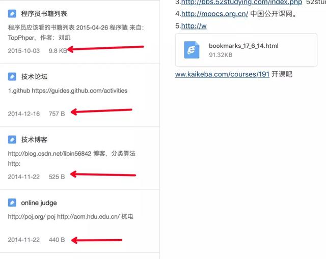
到了16年的时候，我做计划做得更加有条理了。下图是16年10月30日的计划，那时候我已经大四了，并且已经找到了工作、签了满意的offer，并且没有什么课，按理说可以放松放松了，不过我还是制定了一些学习计划，并且选择在11月去百度实习。从内容上看，主要是学习英语和计算机专业课，因为大一大二的时候我确实不明白为什么要学习专业课，到了大三下想清楚原因以后，我也就一直在重新学习，因为计算机专业课真的很重要！学好了这些课，能让你在日后的学习工作中轻松不少：
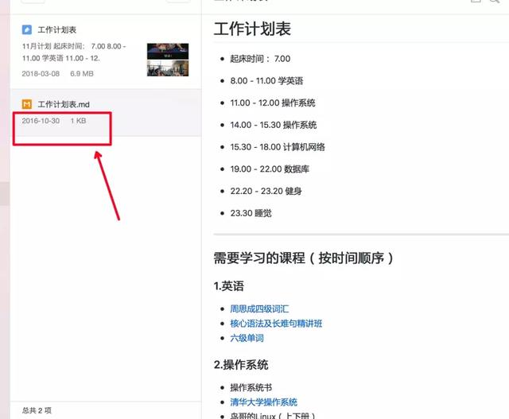
除了大四制定的计划外，大二的时候我也制定过较为详细的学习计划（如下图），把需要学习的内容进行了编号，存入表格，这样才能让你过得有条不紊。当然，很难完全按照计划去执行，不过制定相应的计划能让你清楚地知道自己应该干什么。
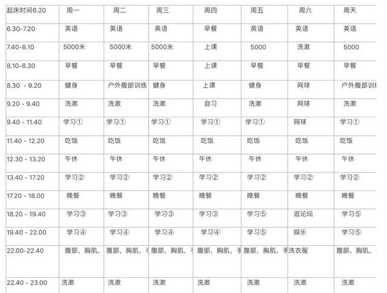
所以，如果你是在校生，那么好好制定一个计划吧，因为你有大把的时间。当然，如果你已经毕业了，没关系，我现在也在上班，同样也列举了自己最近要学习的内容，如下图（2月27日更新过），包括了短期和长期需要学习的内容：
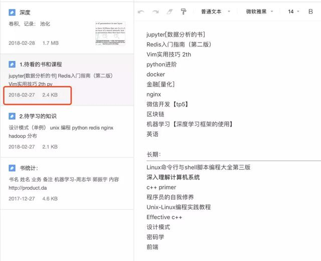
4.编程是否需要做笔记和写博客？
我觉得，写不写博客无所谓，因为博客是要写出来给大家看的，可能要保证格式美观、语法也要尽量准确，最好比较有文采，我觉得太麻烦也就一直没写。而笔记是必须要做的，并且记笔记是一个长期的过程。在学习的过程中，我们一直都在追求一种最高效的学习方法，比如，同一个班的同学，他用他的学习方法考上了清华，而你用同样的方法就不行，为什么？因为他的方法对他自己而言是定制化的，可能且大概率不适合你，比如他的笔记你不一定能看懂，因为他可能设计了一套属于自己的符号。而就编程而言，很多同学说善用搜索引擎，是对的，可是搜索引擎搜出来的是别人的答案。你照搬过来，也许可以用，但是你没有记住，这些知识并不属于你，之后你可能还会遇到同样的问题，又要再搜索一遍，可能很难找到之前的那个答案了。但是记笔记就不一样，记笔记是定制化的，对你自己定制，你可以用自己最爽的表达方式来描述一个问题，是自己写给自己看的东西，看了几遍之后就能非常迅速和容易地理解。之后遇到相同的问题可以快速地通过找笔记解决。
举个例子，下图是我记录的一些关于gdb【linux下调试c++的工具】的使用的一些笔记。我只记录了我自己最常用的一些内容，也许你看着很乱，但是我就能很容易看懂，这就是我的定制化。
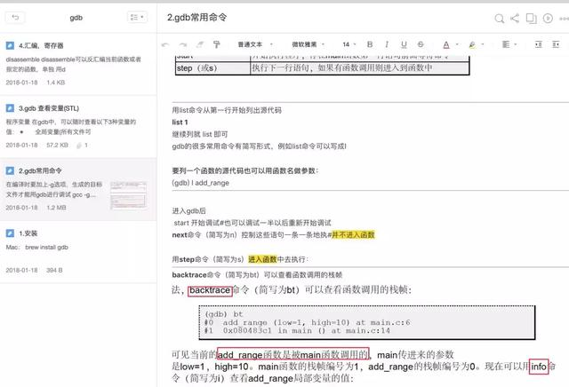
记笔记的习惯一定要坚持，等过个一年或者两年，这就是你巨大的财富，因为那是只有你才能看懂的东西。我已经记录了4年多、1G多的内容，现在的笔记基本已经形成了体系，可以给大家展示其中的一部分。
专业知识相关笔记：
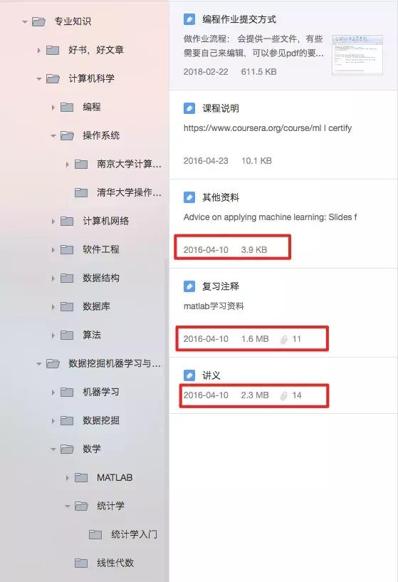
开发相关的笔记：
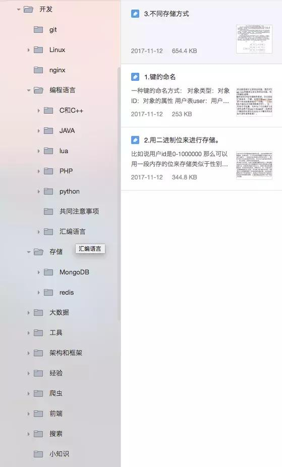
一些类目：
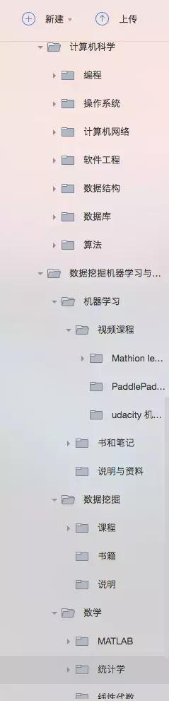
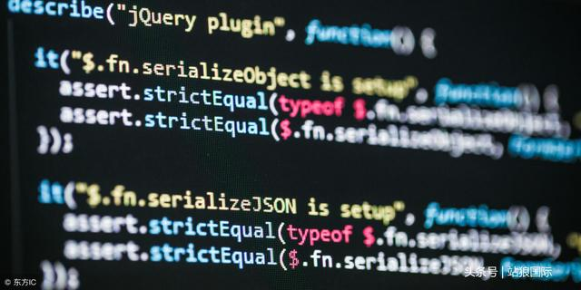
软件开发人员的编程代码
5.有什么比较好的编程方法？
除了上述分享的一些方法，我认为在同一时间段不要学习太多类别的课程，比如你可以同时学习python和html/css，但是你不要同时学python、操作系统、编译原理、计算机组成、数据结构、网络，我曾经试过，一门课没学一会儿就学下一门，其实上一门根本学不到什么实际的知识。因为记忆知识是符合艾宾浩斯记忆曲线的。对于一门课，特别是很难的专业课，譬如操作系统，你每天看半小时，效果是比较差的，可能你热身就得半小时。所以宁可每天学两门，然后每一门学长一点的时间，比如两小时。【毕竟学校上课，一次课也得两小时】，要避免贪多，一口吃不成个胖子。
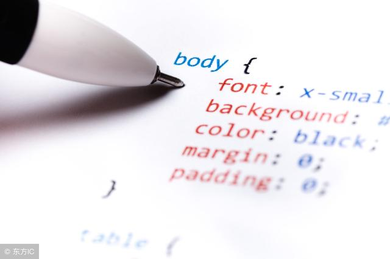
6.我需要刷oj么？
我认为刚开始编程的时候还是应该刷的，但是一定要注意，不要被你周围的“X神”给误导了。因为我上大学的时候，身边总是有很多搞计算机竞赛的人，他们之间都互相称对方为“X神”，某某神又使用一个牛逼的算法，将程序时间从1秒降低到了0.999秒。我要劝大家的是，刷题不是为了达到这个目的，不是说非要在竞赛中拿奖，除非你是特别喜欢，否则，没必要去背代码。我们刷题的目的是适应写代码的感觉，在这个过程中你会遇到编译错误，你会慢慢去记住一些语法、关键字，并理解一些概念，还可以自己去使用它，比如实现数据结构。慢慢的你就会变得有经验，知道一些错误产生的原因。我也是慢慢这样过来的，我现在在工作和下班以后写代码时，基本都不用IDE了，比如写c++，要么vim，要么就是sublime，而调试用的是我前面提到的工具gdb。即，有一个文本编辑器就能写代码，脱离了IDE的束缚。在写oj之后一段时间，在比较熟练了之后，就可以不去刷题了，可以去譬如github这样的网站上找点项目来看，然后自己跟着写一下，编程能力慢慢就提升了。就计算机专业来说，很多同学在大一上完编程课之后，就很少写代码了，这样是很不好的。刷题除了可以锻炼编程能力，对于找工作前突击也很有作用。比如，我之前投递过华为公司的研发岗位，校招的时候有笔试题。我就在16年国庆的时候刷了一下华为的oj，我记得笔试是600分的总分，过100就给面试机会，而我很轻松的就拿了500分，而当时也就刷了20多道华为的题。
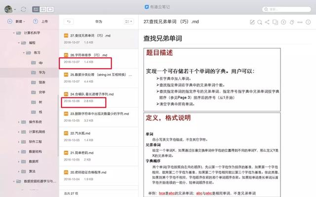
7.看书还是看视频？
网上有不少人鄙视看视频学习的同学，我不知道为什么，因为我认为看视频是一个很好的学习方式。不过我们得明白看书和看视频分别有什么优缺点。
其实我是很建议看视频入门的，因为目前网上的应用型【非学术型：比如清华大学的操作系统，非常难】的视频都是很简单的，很多是面向初学者的，视频能用较短的时间告诉你你现在所学的技术可以干什么，可能需要先修哪些知识，可以帮助我们搭建一个项目驱动式学习的网络。可是视频也有个缺点：就是知识非常的杂，很不系统。虽然现在很多教学网站都提供了学习路径，但是这些路径中的视频很多时候都不是同一个老师录制的，只是按照知识的依赖关系排的顺序，所以，如果想通过视频去系统地学习一门知识，是比较困难的。【当然，一些学术型的视频还是很推荐的，比如斯坦福的机器学习，清华的操作系统、数据结构等课程，能坚持看完，绝对受益匪浅】。而应用型的，比如web开发等知识，还是得看书。书籍等特点就是系统化，由浅入深，你可以定制化地看自己薄弱的章节。所以一个比较好的学习方式是：
看视频入门，看书进阶。
世界您好
8.多久能学会编程？
其实这个问题是没有答案的，如果只是想做出一个小应用，2个月足矣，而就我个人而言，我认为学习编程不是学习一种编程语言，而是学习一个生态，一个计算机系统，所以无止境。

9.我应该选择什么资料，看什么书？
其实这个问题也是很多编程新手容易困惑的问题。网络上拥有我们一辈子都看不完的教程和资料，所以现在应该不会存在找不着视频教程、找不着书看的问题。而问题就是我们不知道看什么视频、看什么书。从开始学编程到现在，我也买了上百本书，而真正适合自己的好书并不多。而视频教程的问题就更严重了，东看一点、西看一点，知识很难组织成网络。所以学习编程的过程中，我们遇到的最大的问题是：当我们遇到问题的时候，在大量资料面前，我们不知道选择什么资料去学习。即使我们使用项目驱动式学习的方法找到了我们的方向，但是同一个路径下，也有很多资料。前文列举的项目驱动式学习的图中，我们是自上而下的去发现问题，然后再解决问题。如果能有人帮我们组织好学习路径，然后自下而上地去学习，那么效率可能会提高很多。 （大数据前沿 二胖）